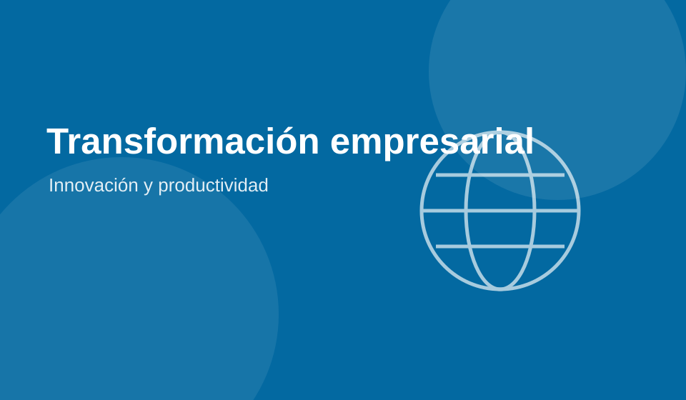
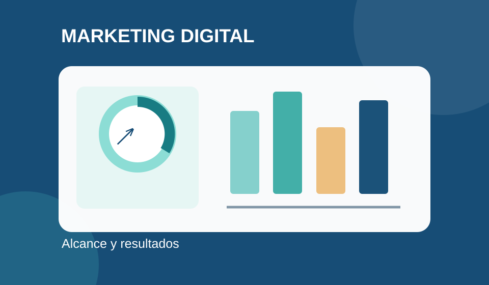

Comercio electrónico
Catálogos digitales, pedidos y seguimiento de compras mediante plataformas web.
Proyecto académico · HTML5
Los canales digitales permiten mostrar productos, ampliar el contacto con clientes y organizar procesos en empresas grandes y pequeños emprendimientos.

Distintas herramientas digitales ayudan a mejorar la comunicación y la oferta de servicios.
Catálogos digitales, pedidos y seguimiento de compras mediante plataformas web.

Sitios, buscadores y campañas que ayudan a dar a conocer una marca y sus productos.
Formularios, preguntas frecuentes y canales de consulta para apoyar al usuario.
Ejemplos cualitativos de cómo pueden cambiar los procesos, sin representar cifras estadísticas.
| Proceso | Enfoque tradicional | Con tecnologías web |
|---|---|---|
| Ventas | Atención principalmente en un local físico. | Catálogos y pedidos que también se realizan en línea. |
| Publicidad | Folletos, anuncios impresos o locales. | Contenido digital y campañas dirigidas por medios web. |
| Atención al cliente | Consultas telefónicas o presenciales. | Formularios, centros de ayuda y canales remotos. |
| Colaboración | Documentos y reuniones presenciales. | Archivos compartidos y reuniones virtuales. |
La tecnología no reemplaza la planificación de un negocio. Es una herramienta para atender necesidades y aportar valor.